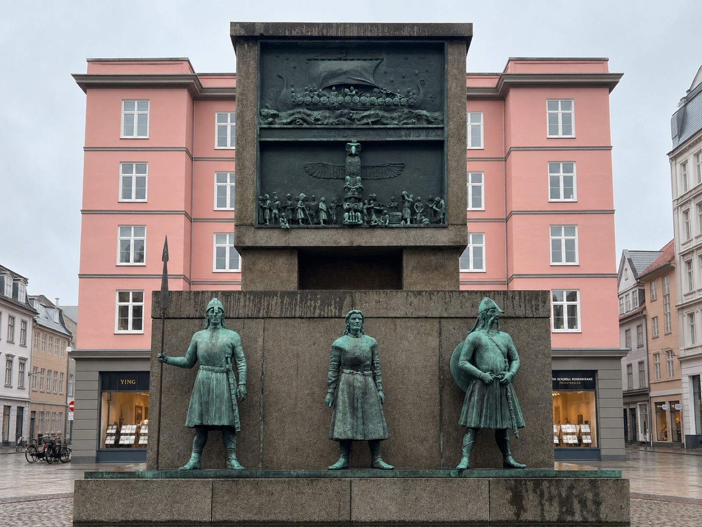
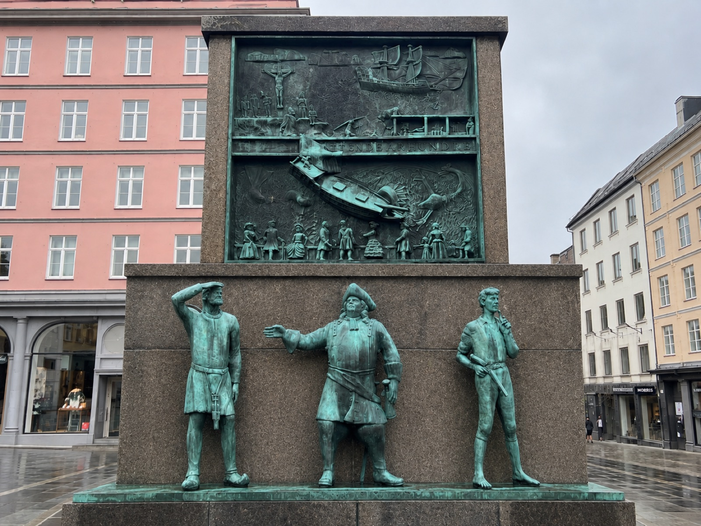
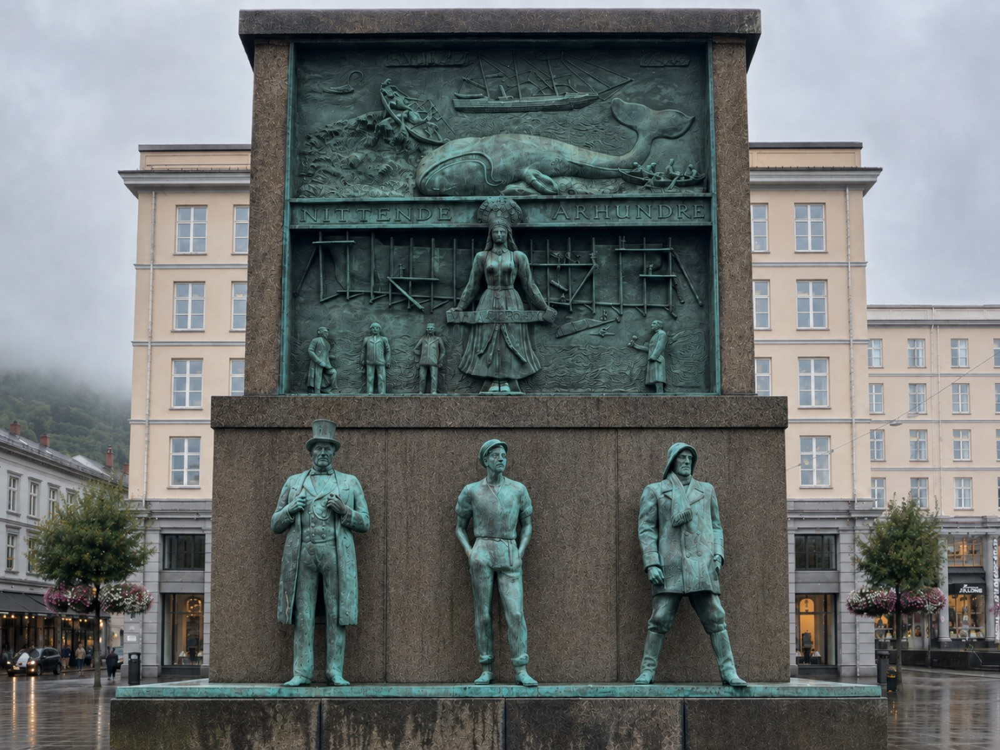
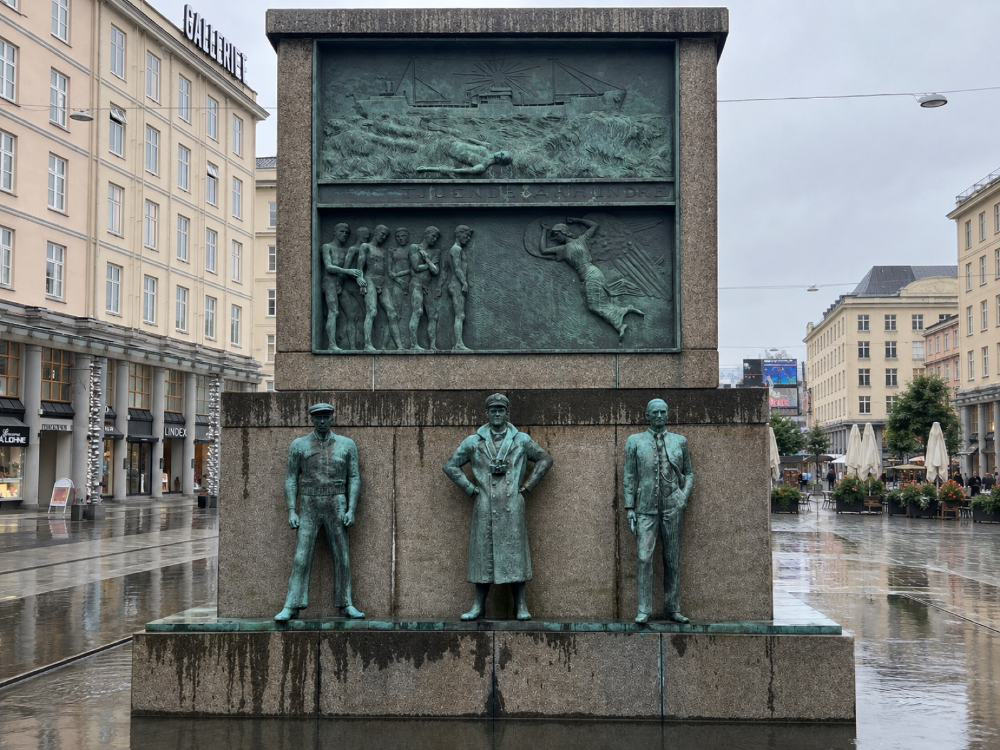

十二尊青銅水手，面向四方，橫跨一千年——從維京長船到石油輪機艙，這是挪威人寫給海洋與亡者的紀念碑。
走出卑爾根最熱鬧的購物大街 Torgallmenningen，會先看到一座七公尺高、方正如祭壇的花崗岩基座，四面都站著青銅水手。這不是某位英雄的紀念碑，而是一整個航海民族的自畫像——十二尊真人尺寸的水手雕像，加上八幅敘事浮雕，分成四組，各代表一個世紀：第十世紀（維京時代）、第十八世紀、第十九世紀、第二十世紀，分別朝向廣場的四個方向。
雕塑家 Dyre Vaa 把它取名為「幸運的考驗」（Lykkens prøve）——航海本身就是一場與命運的賭注。紀念碑於 1939 至 1945 年間陸續塑形，因二戰爆發而延宕多年，最終在 1950 年 6 月 7 日正式揭幕。
紀念碑的構想不是憑空而來，而是源自一場真實的海難悲劇。1917 年，正值第一次世界大戰無限制潛艇戰最猛烈的時期，那年春天是挪威商船隊史上最慘烈的一段時間——短短數月間有多達 300 艘挪威船隻被擊沉，439 名海員葬身海底。卑爾根船東協會（Bergens Rederiforening）與卑爾根船長協會（Bergens Skipperforening）於是倡議，要為這些犧牲的海員立一座紀念碑。
隨著時間推移，紀念碑的主題從單純哀悼戰爭中犧牲的船員，擴大為禮讚整個挪威航海民族——從維京時代的長船水手，到二十世紀輪船上的水手與輪機工，都被納入同一座紀念碑的敘事之中。
卑爾根船東協會與船長協會提議建立紀念碑，起因是當年無限制潛艇戰造成的慘重船難。
公開徵件競圖，共收到 45 件設計方案。年僅 30 多歲的雕塑家 Dyre Vaa 以作品「幸運的考驗」（Lykkens prøve）獲選。
Vaa 以泰勒馬克（Telemark）農民為模特兒,在戰爭期間陸續完成約 25 座石膏原型，但因二次大戰爆發，鑄造與建造工程一再延宕。
紀念碑正式揭幕，由當時的挪威工業部長 Lars Evensen 主持典禮，經費全數來自公眾募款。
卑爾根市政府整修 Torgallmenningen 廣場,在紀念碑基座周圍加建大片水池,讓青銅群像得以倒映水中——某種程度上回應了長年以來「紀念碑離海太遠」的批評。
Dyre Vaa 出生於挪威泰勒馬克郡（Telemark）的克維特塞（Kviteseid），後來長居於勞蘭（Rauland），是二十世紀挪威最重要的雕塑家與畫家之一。他的創作生涯橫跨了兩次世界大戰,水手紀念碑正是他最具代表性、也最具野心的公共藝術計畫——用整整六年的時間，塑造出十二尊真人尺寸的水手與八幅敘事浮雕，濃縮挪威上千年的航海記憶。
特別值得一提的是，Vaa 並沒有用職業模特兒,而是找來家鄉泰勒馬克的農民擔任雕像的原型——粗獷、結實、帶著土地感的身形,或許正是他心目中挪威水手最真實的模樣。

最底層的三尊青銅像是整座紀念碑最古老的角色：一位手持長矛、頭戴尖盔的持矛戰士；中間是一位面容肅穆的女性（一說為代表維京社會中地位不低的女性角色，亦有解讀為吟遊詩人 skald）；右側則是頭戴角盔式頭盔、手持圓盾與劍的「狂戰士」（berserk）造型戰士，蓄著長鬚，姿態警戒。

左側漁夫舉手行禮致敬遠望；中間是頭戴三角帽（tricorn）、身形豐腴的船長，一手指向遠方、一手叉腰,是整組最具戲劇張力的姿態；右側是年輕水手,手按著腰間短刀,若有所思地仰望。三人合起來,講述的是十八世紀北大西洋漁業與捕鯨、探勘航線並存的時代。

左側是頭戴高禮帽、身穿燕尾西裝的紳士——代表這個世紀崛起的新角色：坐擁船隊的船東（skipsreder）；中間是雙手插腰、頭戴扁帽的年輕水手，姿態輕鬆自信；右側是身穿厚重大衣、雙手插入口袋、頭戴防風帽的領港員（los），面容嚴肅,常年與惡劣海象打交道的痕跡寫在臉上。三種身份並列,正是十九世紀挪威航運業從個體討海走向資本化船隊經營的縮影。

左側是頭戴船員便帽、雙手垂放的甲板水手；中間是身穿雙排釦長大衣、胸前掛著望遠鏡、雙手叉腰的船長，姿態最具權威感；右側是西裝筆挺、繫著領帶的男子，代表航運公司或岸上事務的角色。三人合起來,勾勒出二十世紀機械化商船（蒸汽輪、油輪）時代裡,海上與岸上分工日益精細的航運體系。
水手紀念碑揭幕至今超過七十年,卻始終不是一座「人人稱頌」的紀念碑。它龐大方正的花崗岩量體，與周圍典雅的十九世紀街屋形成強烈對比，長年引來卑爾根本地藝文界的尖銳批評——但也正因為這份「愛恨交織」，讓它成為卑爾根人日常生活裡最難忽視的存在。
「它就像一塊山羊起司，是卑爾根臉上一顆難看的疣。」— Sverre Jordan，挪威作曲家
稱這座紀念碑是一個「雕塑怪胎」（skulpturelt vidunder，帶貶義），批評其量體與周邊街景格格不入。
認為紀念碑「比例失調、設計乏味」，甚至建議應該把它遷移到較不顯眼的位置，避免持續佔據市中心最精華的廣場視野。
儘管評價兩極,水手紀念碑依然穩穩地站在 Torgallmenningen 廣場中央將近八十年，成為卑爾根人約碰面、觀光客拍照打卡的地標。1999 年增建的水池，某種程度上也softened了這座巨大花崗岩量體的壓迫感——雨天時，青銅水手的身影倒映在水面上，反而多了幾分詩意。